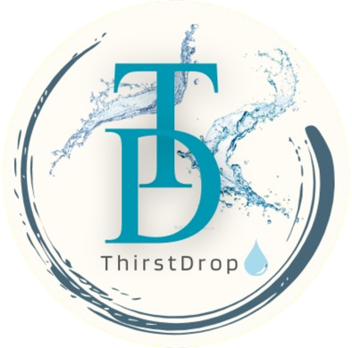
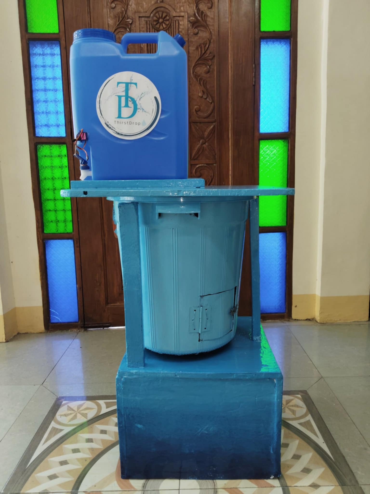

Addressing Two Urgent Problems With One Smart Solution: Plastic Waste and Lack of Clean Water.
Our smart water vending machine allows users to exchange empty plastic bottles for clean drinking water. We reward sustainability and promote inclusive hydration for all.
We’re a team of student innovators and environmental advocates with backgrounds in engineering, sustainability, and design. ThirstDrop was born out of a desire to rethink how we handle plastic waste and make hydration both accessible and eco-friendly.

"I love to welcome ThirstDrop at our school and I like how it gives water just for recycling. Finally, a fun way to care for the planet!" — Angelica, University Student
"My kids actually want to pick up bottles in the park now just to use the machine. It’s genius!" — Mark, Father of Juno
"Clean water plus recycling? ThirstDrop is the kind of innovation every city needs." — Engr. Ruiz, Community Planner
Want to bring ThirstDrop to your community, school, or business?
Interested in purchasing or inquiring about ThirstDrop for your school, business, or community?
Email: thirstdrop@gmail.com
Phone: +63 912 158 7174
Location: Tacloban City, Philippines